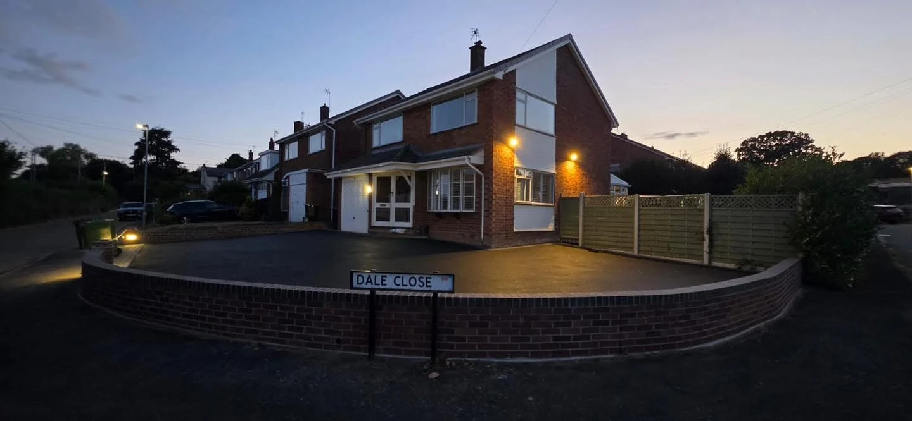
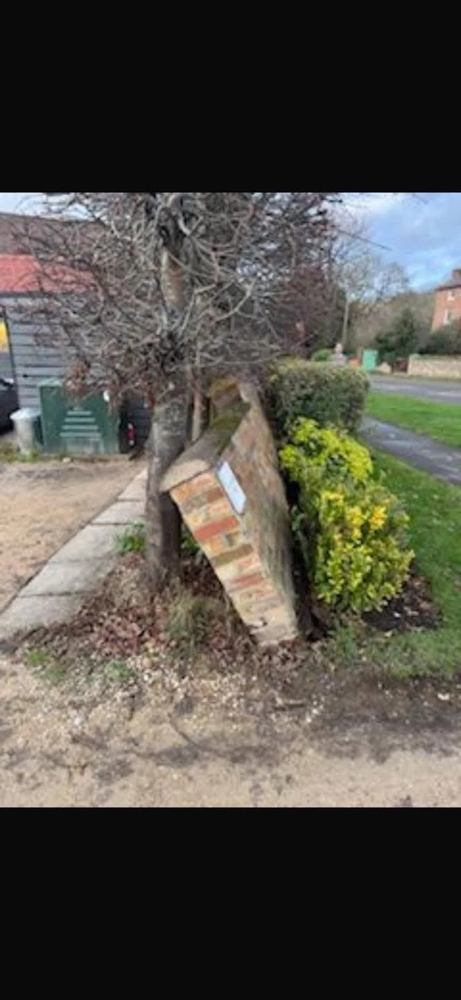

APEX CONSTRUCTION & LANDSCAPING
Real projects.
Considered details.
From construction work and garden transformations to paving and brick repairs.
THE APEX PROJECT COLLECTION
The APEX project collection.
Construction, paving and landscaping projects, with work in progress and finished details. Select a photograph to enlarge.
A BOUNDARY REBUILT
From leaning wall
to a clean finish.
Before, during and after a wall repair.

YOUR FREE PROJECT QUOTE
Good ideas.
Start with a conversation.
Tell APEX about your plans, the space and your location. This form prepares a WhatsApp draft for you to review, attach photos and send.
Send your postcode to check project coverage and availability.